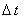

|
Ещё одним способом интерпретации неявной разностной схемы (7.3),
аппроксимирующей двумерное дифференциальное уравнение параболического типа (7.1), является
схема со стабилизирующей поправкой, рекомендуемая для использования в случае, если существует особенность
поведения (например, осцилляции) искомой функции u в одном из пространственных направлений
(в данном случае по координате y):
Первая подсхема в схеме со стабилизирующей поправкой (7.14) аппроксимируется на первом полушаге интервала 
и является неявной по координате x и явной по координате y. Вторая подсхема
аппроксимируется на втором полушаге интервала , является неявной по координате y и учитывает
поправку по этой координате. Каждая из подсхем (как и в случае схемы расщепления (7.7), (7.8))
является абсолютно устойчивой и решается с помощью метода прогонки.
Складывая обе подсхемы и принимая во внимание обозначения (7.6), получаем:
Данное соотношение показывает, что схема со стабилизирующей поправкой (7.14) имеет, как и неявная
разностная схема (7.3), первый порядок аппроксимации по времени и второй - по каждой из координат:
Алгоритм решения схемы со стабилизирующей поправкой (7.14)
аналогичен алгоритму решения схемы расщепления
(7.7), (7.8). Коэффициенты, соответствующие уравнению (4.10), имеют вид:
для первой подсхемы
для второй подсхемы
Легко видеть, что для обеих подсхем достаточное условие сходимости прогонки (4.16) выполняется.
|